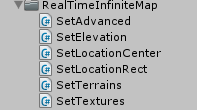
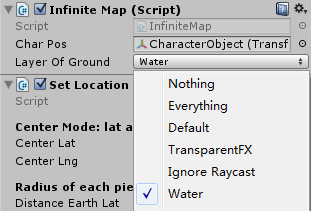
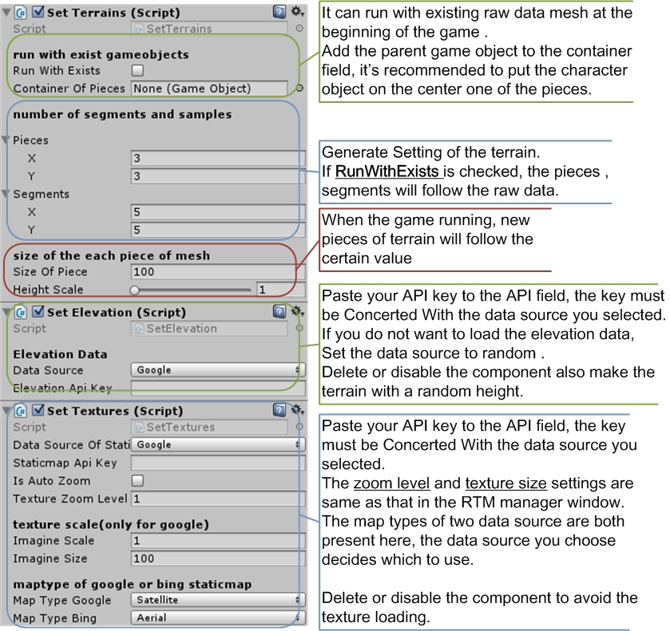
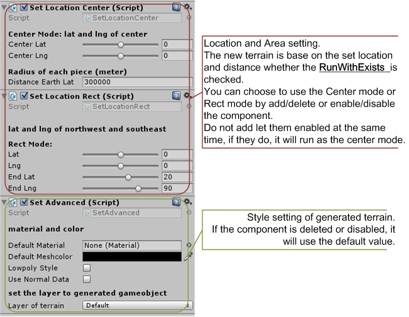

Run Time Infinite Map
|
Detect the position of the character and download the map texture and elevation data automaticity while running the game.
Add some of the infinite map scripts to a game object in the scene, fill the fields of setting and run the scene. It will load the pieces on the edges when the character object is moving.
open the example scene infinite map and run to see how infinite map works.
|

|
Character and Ground setting
To play with the infinite map, you need to add the infinite map script and a Gameobject as the character.
|

|
Drag the character Gameobject to the CharPos field, and select the layer which the pieces of terrain in.
The script detects which edge the character is approaching to by check which piece of ground it is on. The Layer of Ground field is the layer mask to avoid other objects which are not supposed to be check.
If you set a default layer when generate terrain, the layer mask should be same as the default layer you set. |
Terrain Setting
The setting of infinite map is as same as setting them in editor window.
The script SetTerrain is required, and the other components can be deleted or disabled if they are not needed.

